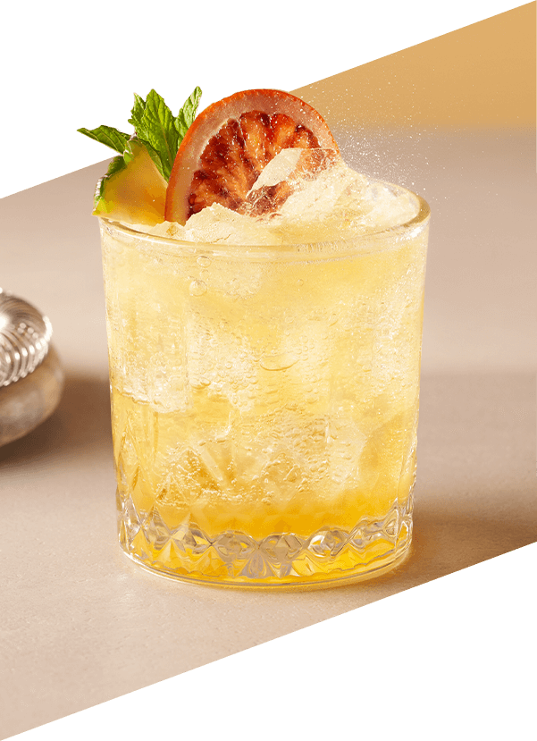
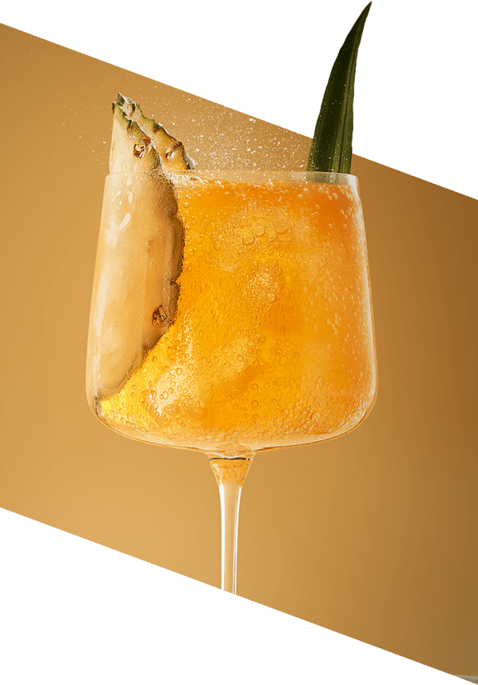
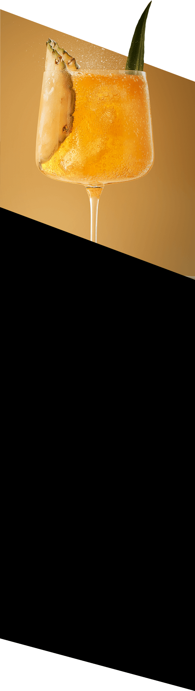

Ananas & Jalapeño
Unikalne połączenie smaków tropikalnego
ananasa i ognistego jalapeño, które rozpali wszystkie zmysły
Nowa, autorska baza do koktajli i moktajli SodaStream Crafted Ananas & Jalapeño to tropikalne połączenie ananasa z wyrazistą nutą jalapeño. To smak, który zachwyca swoją wyjątkowością, łącząc słodycz z pikantnym akcentem. Przywołaj klimat egzotycznych plaż w każdej chwili – bez wychodzenia z domu!
Perfekcyjne
koktajle i moktajle
na 1, 2, tssst!
W ciągu dnia wyczarujesz orzeźwiające moktajle i zrelaksujesz się
przy bąbelkowej lemoniadzie 2.0, idealnej na małe rytuały
i spontaniczne spotkania z bliskimi.
Wieczorem stworzysz wyrafinowane koktajle, które wzbogacą
uroczyste kolacje, przyjęcia i romantyczne chwile. To połączenie,
które doda charakteru każdej imprezie.
Orzeźwiające
w dzień
wyrafinowane
nocą!
Zostań domowym
barmanem
Twórz napoje, które idealnie wpisują się w Twój gust. Z syropem SodaStream Crafted Ananas & Jalapeño możesz w prosty sposób eksperymentować z intensywnością bąbelków i dodatkami. Poznaj nasze inspiracje:
Day
Przepis na dzień - Moktajl:
Tropical
Pineapple Fizz
Składniki:
- 35 ml bazy Ananas & Jalapeño
- 35 ml musu ananasowego
- 20 ml soku z limonki
- 45 ml wody gazowanej
- Kostki lodu, kawałek ananasa i plaster czerwonej pomarańczy
Przygotowanie:
- Do shakera wsyp kostki lodu i dodaj mus ananasowy, sok z limonki oraz bazę SodaStream.
-
Zamknij shaker i mocno wstrząsaj
przez 15-20 sekund. - Napełnij szklankę kostkami lodu i przelej zawartość shakera przez sitko barmańskie.
- Uzupełnij szklankę wodą gazowaną, delikatnie mieszając napój.
- Udekoruj kawałkiem ananasa i plasterkiem suszonej pomarańczy.
Night
 Przepis na wieczór - Koktajl:
Jalapeño
Piña Loco
Składniki:
- 35 ml bazy Ananas & Jalapeño
- 70 ml likieru kokosowego
- 10 ml musu ananasowego
- 55 ml wody gazowanej
- Kostki lodu
- Plaster i dekoracje z ananasa
Przygotowanie:
- Shaker wypełnij do połowy kostkami lodu.
- Wlej likier kokosowy, mus ananasowy i bazę SodaStream, a następnie zamknij shaker i energicznie wstrząsaj przez 15-20 sekund.
- Napełnij szklankę kostkami lodu i przelej zawartość shakera przez sitko barmańskie.
- Dopełnij szklankę wodą gazowaną i delikatnie zamieszaj koktajl.
- Udekoruj plasterkiem i liściem ananasa.
gazuj
miksuj
smakuj
Dlaczego warto wybrać
SodaStream Crafted
Ananas & Jalapeño?
Powodów jest wiele:
Wyjątkowy Smak
Tropikalny ananas w duecie z jalapeño zapewnia nieoczywiste doznania
smakowe, a Ty stworzysz z nich bezalkoholowe napoje oraz wyjątkowe
drinki, dzięki którym zabłyśniesz w towarzystwie.
Łatwość przygotowania
Tworzenie koktajli i moktajli jest szybkie i proste. Nie musisz
zgłębiać tajemnej wiedzy barmańskiej. Już sam smak syropu doda Twoim
kompozycjom unikalnych nut, a jeśli wzbogacisz je ulubionymi
dodatkami – przepis na sukces gotowy!
Szaleństwo bąbelków, rozsądny wydatek
Jedna butelka syropu wystarcza na około
20 drinków, co czyni produkt ekonomicznym
i praktycznym wyborem.
Gotowy na tropikalną przygodę?
Zalecane proporcje
Moktajl:
1 część bazy SodaStream Crafted + 10 części wody gazowanej.
Koktajl:
1 część bazy SodaStream Crafted + 10 części wody gazowanej
+ 2 części alkoholu.
Twórz, mieszaj,
zaskakuj!
Odkryj radość miksologii
z SodaStream Crafted Ananas & Jalapeño
Syrop SodaStream Crafted to doskonała baza do eksperymentów.
Od klasycznych kompozycji po odważne połączenia z
egzotycznymi owocami i ziołami. Każdy napój to nowa przygoda,
która zachwyci Ciebie i Twoich bliskich.
Zaproś kreatywność do swojej kuchni i twórz niezapomniane smaki!
Jedna SodaStream – wiele możliwości
Ananas & Jalapeño to tylko początek Twojej bąbelkowej podróży z SodaStream! Odkryj inne zaskakujące smaki z linii SodaStream Crafted, takie jak Grejpfrut & Kwiat Czarnego Bzu oraz Brzoskwinia & Imbir, lub postaw na klasyczne, ulubione smaki SodaStream jak marakuja, lemoniada, pepsi, mirinda czy cola. Pamiętaj, że wiele syropów smakowych dostępne jest również w wersjach bez dodatku cukru.
Twórz. Eksperymentuj. Inspiruj.